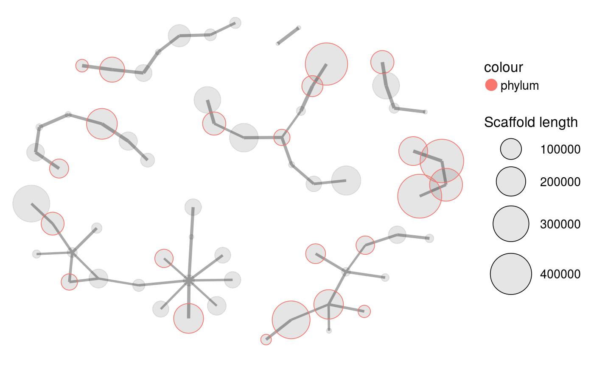

Plots all connected scaffolds in a network plot. Scaffolds can then be highlighted and extracted using the locator and selection features.
mmnetwork(mm, network, min_connections = 2, color_by = NULL, color_scale_log10 = FALSE, locator = FALSE, selection = NULL, highlight_labels = NULL, highlight_color = "darkred", links_scale = 1, scaffold_labels = FALSE, print_nolinks = FALSE, seed = 0)
| mm | (required) A dataframe loaded with |
|---|---|
| network | (required) Paired-end or mate-pair connections between scaffolds in long format. The first and second columns must contain all connected scaffold pairs and the third column the number of connections. |
| min_connections | Filter all scaffold pairs with equal to or less than this number of connections. (Default: |
| color_by | Color the scaffolds by a variable in |
| color_scale_log10 | (Logical) Log10-scale the colors of the variable defined by |
| locator | (Logical) When |
| selection | A 2-column dataframe with the x and y coordinates of points with which to draw a polygon onto the plot to highlight a selected region. A selection can be obtained by using the locator feature (by |
| highlight_labels | A dataframe or vector of scaffold names whose labels to highlight in the plot (colored by |
| highlight_color | The color with which to highlight the scaffold labels defined by |
| links_scale | A factor to scale the sizes of the links plotted between scaffolds. (Default: |
| scaffold_labels | Add labels with the scaffold names of all scaffolds. |
| print_nolinks | (Logical) Print the names of all scaffolds with no links to other scaffolds to the console. (Default: |
| seed | Network plots are based on Random Number Generation, and this is used to set a specific random seed (with |
A ggplot2 object.
Unlike a plot generated by mmplot, the coordinates of points in each dimension in a mmnetwork plot is not contained within the provided dataframe mm itself. As such mmnetwork does not have a corresponding extract function like mmextract is for mmplot. Instead, a subset of mm containing all scaffolds within the selection polygon is available in the returned ggplot object with plot$data_in_selection.
library(mmgenome2) data(mmgenome2) data(paired_ends) mmgenome2#> # A tibble: 97,285 x 10 #> scaffold length gc cov_C13.11.14 cov_C13.11.25 cov_C13.12.03 #> <chr> <dbl> <dbl> <dbl> <dbl> <dbl> #> 1 1 8264 57.8 1.44 53.6 0 #> 2 2 1027 57.0 0.625 24.2 0 #> 3 3 1665 55.9 13.5 434 0.166 #> 4 4 9056 35.9 0.0100 23.4 0 #> 5 5 3343 64.0 3.20 16.4 0 #> 6 6 98207 39.1 0.00966 24.5 3.29 #> 7 7 6480 63.0 2.61 19.2 1.46 #> 8 8 15790 61.7 2.78 21.2 1.62 #> 9 9 1403 70.4 85.1 192 0 #> 10 10 2018 70.2 50.3 101 0 #> # ... with 97,275 more rows, and 4 more variables: cov_C14.01.09 <dbl>, #> # geneID <chr>, phylum <fct>, rRNA16S <fct>selection <- data.frame(cov_C14.01.09 = c(24.852, 32.545, 53.062, 38.52), cov_C13.12.03 = c(7.676, 5.165, 6.386, 10.933)) mmgenome2_extraction <- mmextract(mmgenome2, selection = selection) mmgenome2_extraction#> # A tibble: 91 x 10 #> scaffold length gc cov_C13.11.14 cov_C13.11.25 cov_C13.12.03 #> <chr> <dbl> <dbl> <dbl> <dbl> <dbl> #> 1 180 22093 74.0 0.298 12.0 7.34 #> 2 181 2970 68.0 0.340 13.9 7.37 #> 3 227 190826 65.4 0.348 13.0 6.91 #> 4 253 296715 70.2 1.06 15.2 7.00 #> 5 315 218862 71.7 0.366 12.6 7.17 #> 6 386 164942 68.2 0.359 12.3 6.73 #> 7 396 7448 72.6 0.329 13.0 7.59 #> 8 423 100199 68.7 1.40 15.3 6.71 #> 9 431 446220 72.4 0.409 12.6 6.80 #> 10 438 2956 52.8 13.6 67.8 6.56 #> # ... with 81 more rows, and 4 more variables: cov_C14.01.09 <dbl>, #> # geneID <chr>, phylum <fct>, rRNA16S <fct>mmnetwork(mmgenome2_extraction, network = paired_ends, min_connections = 10, color_by = "phylum", locator = FALSE)